GeneKeepR Tutorial
A Shiny Application for the Genetic Management of Colonies
R. Mark Sharp
Source:vignettes/shiny_app_use.Rmd
shiny_app_use.RmdIntroduction
This tutorial demonstrates the major functions used within the Shiny application provided by the nprcgenekeepr package. This is a brief tutorial that illustrates a typical workflow and does not explore all possible workflows.
Please provide any comments, questions, or bug reports through the GitHub issue tracker at https://github.com/rmsharp/nprcgenekeepr/issues.
Installation and Help
To get the most recent version you can install nprcgenekeepr from GitHub with the following code.
install.packages("devtools")
devtools::install_github("rmsharp/nprcgenekeepr")All missing package dependencies should be automatically installed.
Online Documentation
You can find the complete online documentation at https://rmsharp.github.io/nprcgenekeepr/.
At the top of the page are three menus to the right of the Home icon: Reference, Articles, and Changelog.
The Reference menu at the top of the page brings up the list of documentation for Data objects, Major Features and Functions, Primary interactive functions and All exposed functions.
The Articles menu brings up the list of vignettes, which are, except for Development Plans, tutorials for using the package.
The Changelog brings up a copy of the NEWS file of the package, which records the major changes made for each version.
This document is the Application for Genetic Management of Colonies vignette.
Running Shiny Application
The toolset available within nprcgenekeepr can be used inside standard R scripts. However, it was originally designed to be used within a Shiny application that can be started with:
This will result in the opening screen where you tell the application how to find the pedigree you will be using.
Input
Pedigree File Structure
Most of the screen is filled with information about formatting a text or Excel worksheet pedigree file.
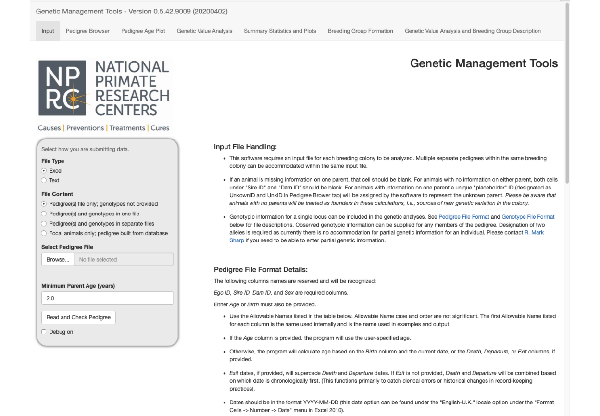
Scrolling down to the middle of the opening screen exposes a table that describes a pedigree file and further instructions.
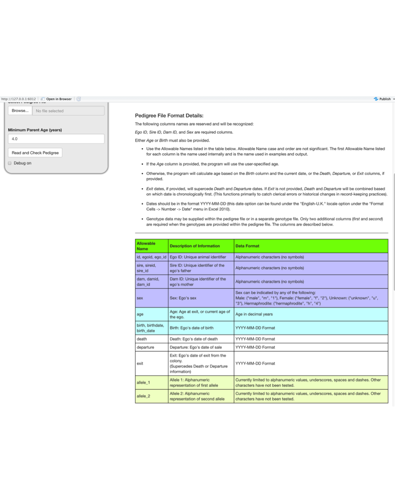
Scrolling down to the bottom of the opening screen exposes more pedigree file instructions, a table that describes a genotype file and instructions regarding use of a genotype file.
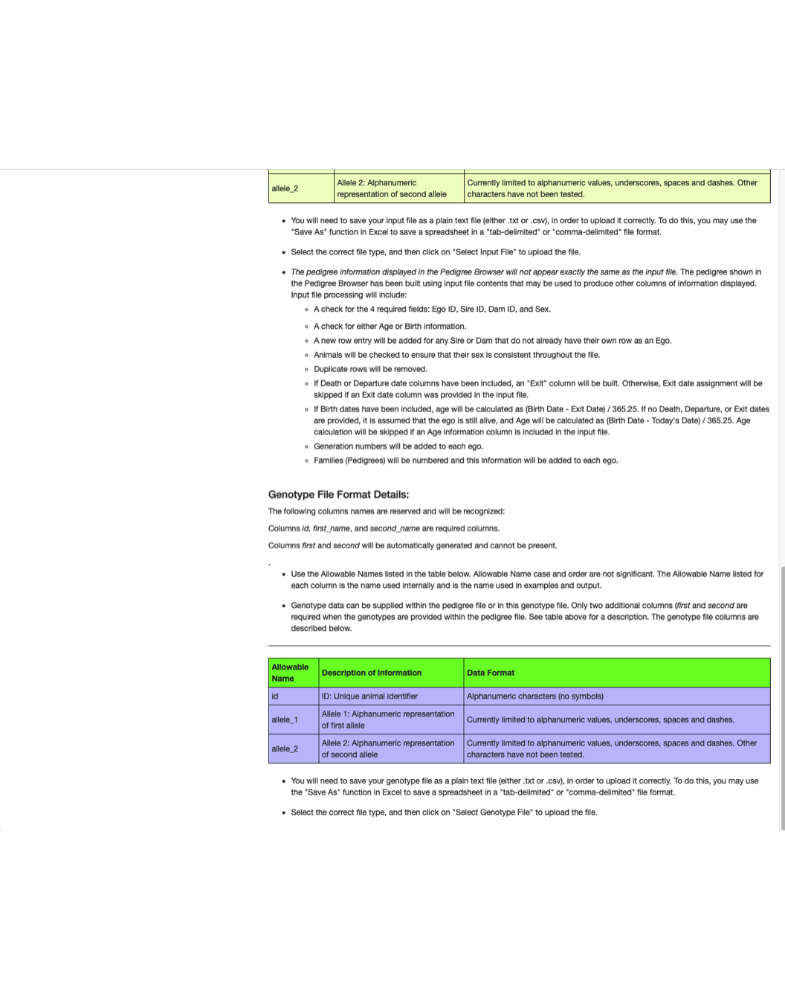
The following is an example of the pedigree file format.
Without genotypes:

With genotypes:
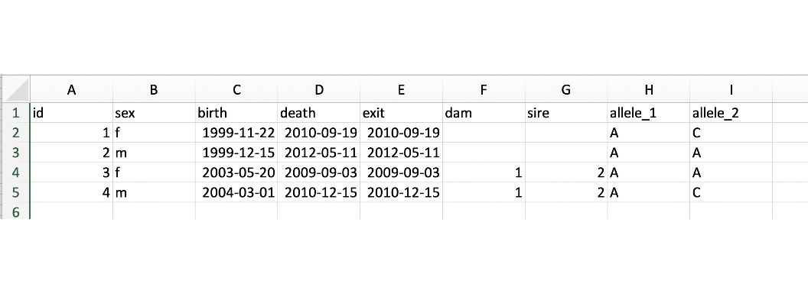
Reading in the Pedigree
In this introductory tutorial, we will use an Excel file containing a hypothetical pedigree of macaques. We will work with the gray box on the left at the top of the screen.
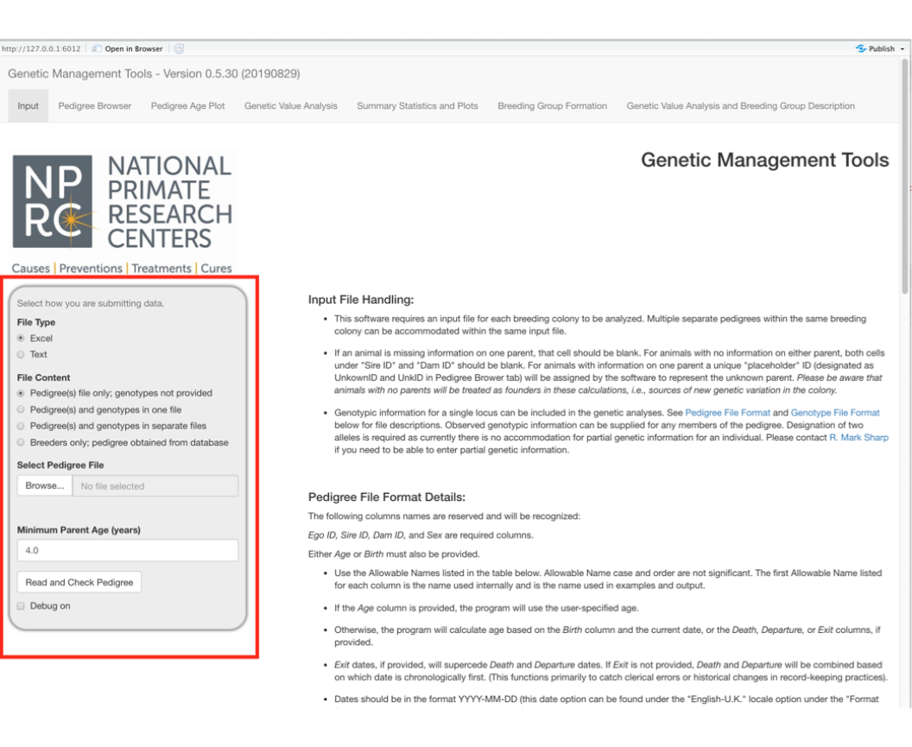
A Microsoft Excel workbook with a single worksheet is the default file type; though comma (.csv), semi-colon (.txt), and tab (.txt) separated value files are all acceptable formats.
The Example_Pedigree.xlsx file we are using is from a CSV file created as shown below and then saved in an Excel format.
Select the Browse button and select the pedigree file from your file system.
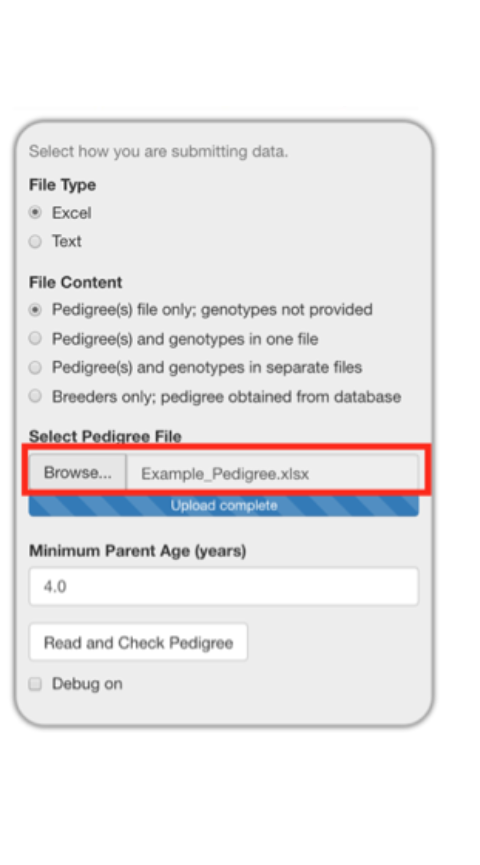
It is important to make sure the minimum parent age is low enough for the animals in your pedigree. For our example pedigree, we are changing it from 4 years to 2 years of age since these macaques may reproduce as early as two years of age. This is shown below in three progressive images with the center image demonstrating how the hovertext provides an explanation of how this value is used.
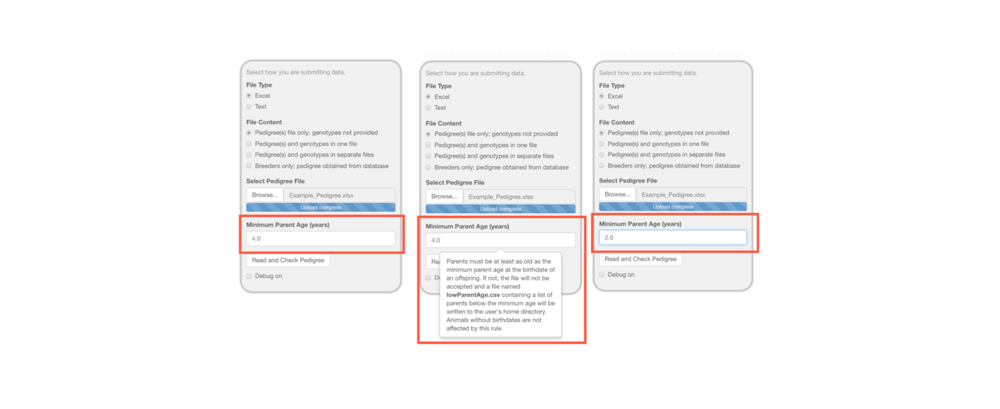
Reading in a Pedigree and Testing for Errors
Selected Read and Check Pedigree will read in the file and test to see if the pedigree file has all of the columns needed and the pedigree is internally consistent.
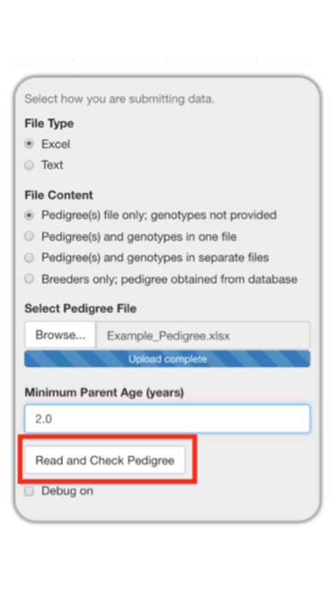
Several error types, shown below, are detected the application.
| Error | Definition |
|---|---|
| failedDatabaseConnection | Database connection failed: configuration or permissions are invalid |
| missingColumns | Columns that must be within the pedigree file are missing. |
| invalidDateRows | Values, which are supposed to be dates, cannot be interpreted as a date. |
| suspiciousParents | Parents were too young on the date of birth of to have been the parent. |
| femaleSires | Individuals listed as female or hermaphroditic and as a sire. |
| maleDams | Individuals are listed as male and as a dam. |
| sireAndDam | Individuals who are listed as both a sire and a dam. |
| duplicateIds | IDs listed more than once. |
| fatalError | Fatal Errors. These are unanticipated errors that should be reported to the package maintainer |
| changedCols | Columns that have been changed to conform to internal naming conventions and what they were changed to. |
Pedigree Browser
The Pedigree Browser tab defaults to displaying 10 rows of the pedigree at a time, but you can choose to display 10, 25, 50, or 100 rows. You can choose to display UNKNOWN IDs in the rows displayed. UNKNOWN IDs (UIDs) are used to label unknown parents of animals with one known parent. The program calculates additional columns based on the input pedigree.
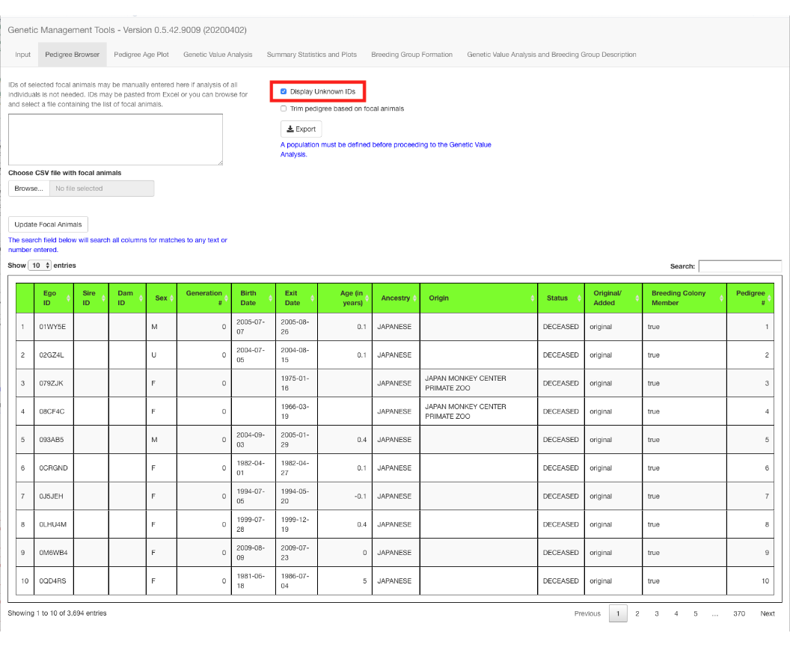
Unknown IDs
I have placed red lines under the UNKNOWN IDs in the partial pedigree list below. UNKNOWN IDs are used to label unknown parents of animals with one known parent. (Note these are found near the end of the pedigree list,) These IDs have no meaning other than they all begin with the letter U and are following with a left alphanumeric string of five places.
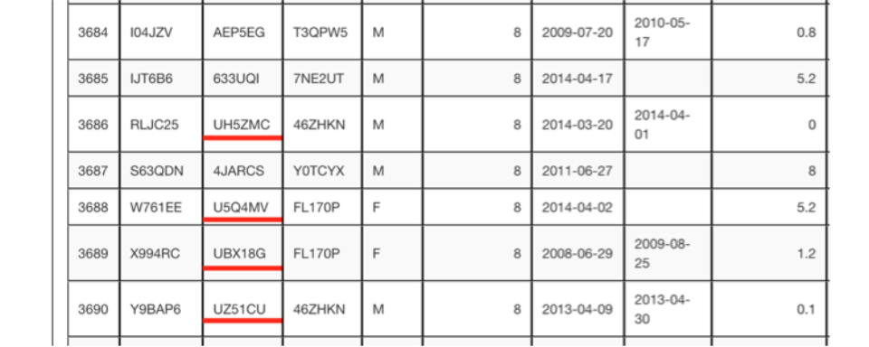
In this example pedigree, when you deselect the Display Unknown IDs checkbox. The number of rows reduces from 3,694 to 2,322, because there were 1,372 UNKNOWN animals generated when constructing the pedigree to provide sire and dam placeholders for all animals.
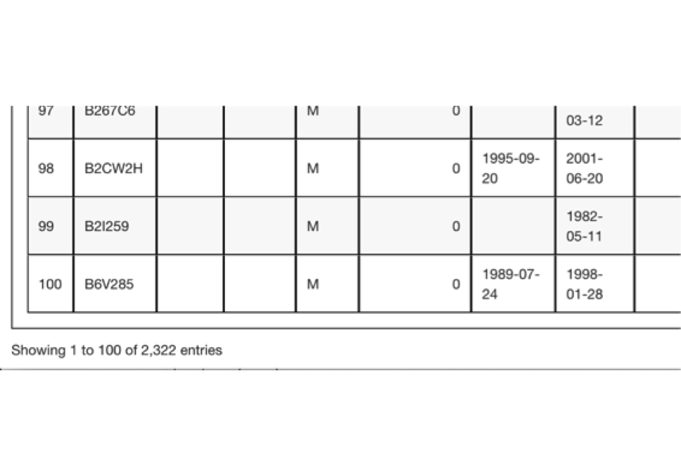
Selecting a Pedigree Subset — Focal Animals
The Pedigree Browser tab displays the full pedigree by default but allows you to select a subset of the pedigree by entering a list of animals of interest (focal animals).

You can enter in the animal IDs by typing them into the text box directly as shown below (FJS7RQ, H6T2FF, HEVL3L, I04JZV, S63QDN). Deselect the Display Unknown IDs checkbox and select the Trim pedigree based on focal animals checkbox. (See top right of image below).
Trimming the pedigree based on focal animals will keep only animals in the pedigree that are related to the focal animals selected.
Select the Update Focal Animals button to tell the application to read your list of animals, trim the pedigree based on that list, and display the trimmed pedigree below. You will end up with 54 animals in your pedigree.

Also, you can import a list of focal animals by selecting the Browse button under Choose CSV file with focal animals. This file can be constructed by creating a simple text file with commas between animal IDs or by placing individual animal IDs on separate lines.
Focal animals are the list of animals that will be used in the following analysis. In most cases, we recommend using all alive animals in the breeding population. By selecting focal animals, the number of pedigree entrees does not change, but the population membership flag will be set to TRUE for the focal animals, and FALSE for all other animals.
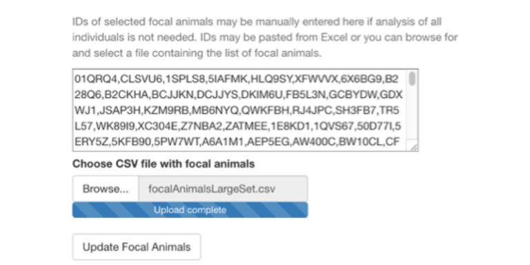
After entering your list of focal animals, you can select to trim the pedigree so that it will only include relatives of the focal animals you have selected. This will reduce the number of members within the pedigree to all animals required to connect all of the focal animals in the pedigree.
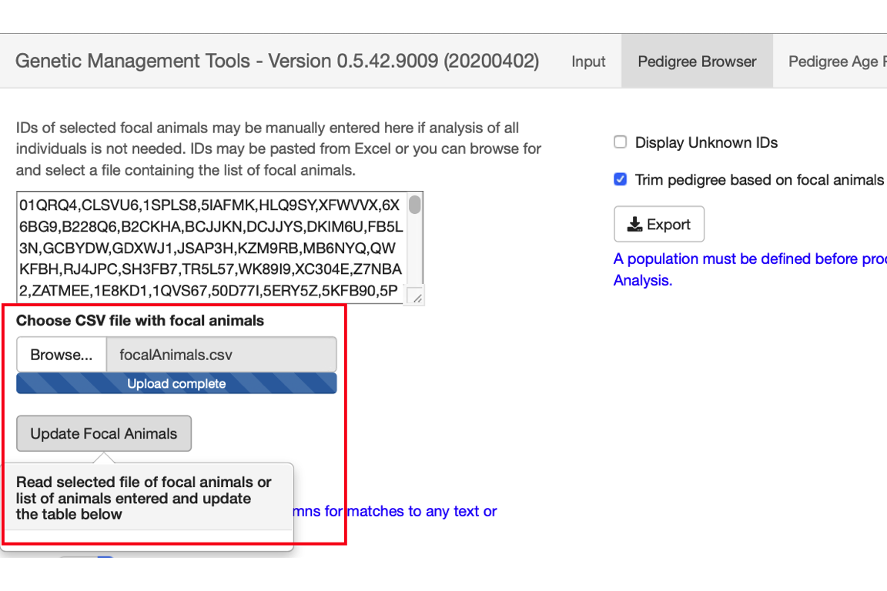
A pedigree trimmed based on focal animals will have only the relatives of those animals remaining. In this instance there are only a total of 522 focal animals and their relatives.
Note: focal animals and their relatives will only be included in the same pedigree when the original pedigree file uploaded indicates a common ancestor for them. Otherwise, focal animals and their relatives will be sorted into separate pedigrees in the output, with each separate pedigree indicated by its own number.
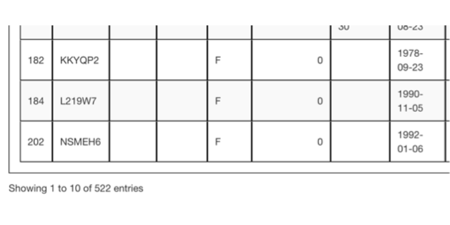
You can remove the animals from the list of focal animals by selecting the Clear Focal Animals checkbox and selecting the Update Focal Animals button. This will read in an empty ID list, clear the box of IDs, and bring back all of the trimmed away IDs.
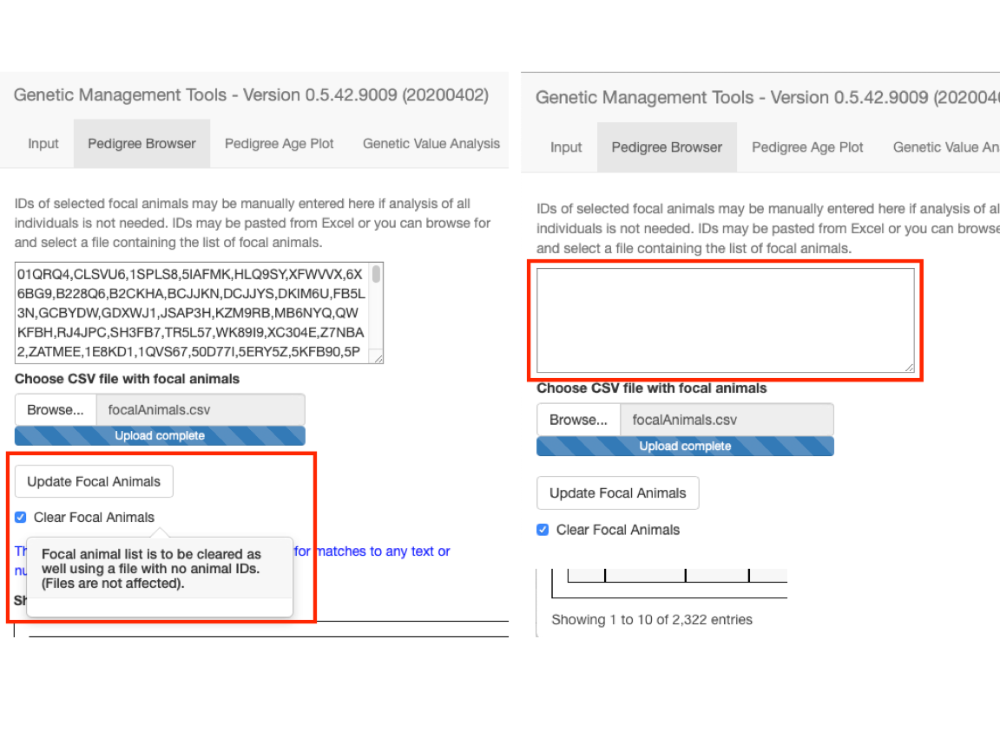
Deselect the Clear Focal Animals checkbox and reselect the Update Focal Animals button before continuing with the tutorial so that we will be working with the trimmed pedigree.
Pedigree Age Plot
The Pedigree Age Plot tab displays a standard pyramid plot for the pedigree as selected in the Pedigree Browser tab. This is showing 332 living animals from the entire example pedigree.
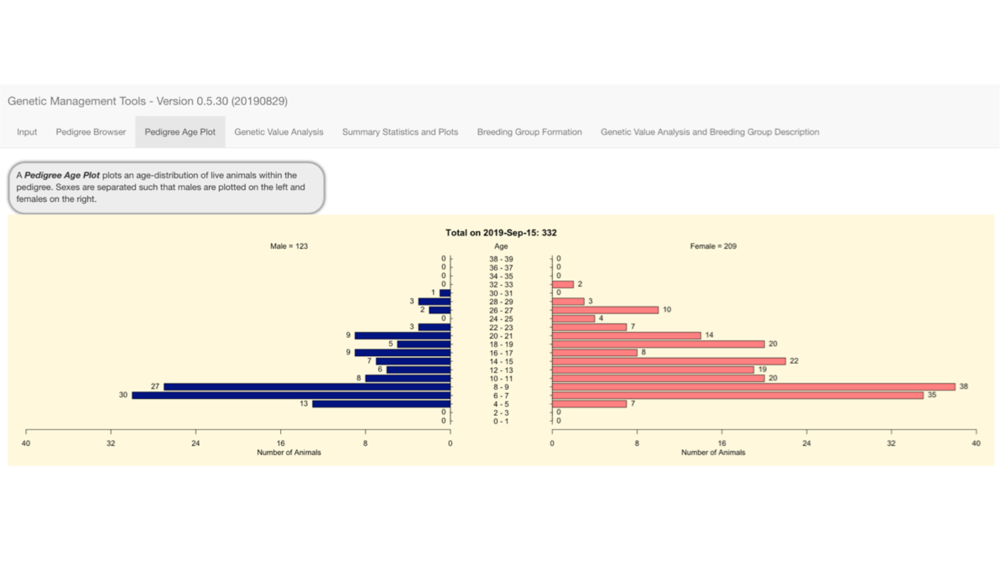
Genetic Value Analysis
Selecting the Genetic Value Analysis tab and enter the number of simulations and genome uniqueness threshold desired. See the Genetic Value Analysis and Breeding Group Description tab for a breakdown of the calculation.
We recommend trying multiple numbers of simulations to arrive at an ideal number that produces consistent results (i.e., 1,000). Genome uniqueness values are calculated using a gene-drop simulation according to MacCluer et al. (1986) and Ballou & Lacy (1995), by assigning unique alleles to all pedigree founders, and simulating their segregation throughout the pedigree according to Mendelian rules. Genome uniqueness is a measure of the probability that an animal possesses founder alleles that are present in at most x other animals (usually 0-3), and thus are rare and at risk of being lost from the population. A range of 2 to 100,000 simulations may be selected. A minimum of 1,000 simulations is recommended. A genome uniqueness threshold value between 0-3 should also be selected, as desired.
Select the Begin Analysis button to start the gene dropping process, which you can monitor with the progress meter in the lower right corner of the display.
We are not aware of a systematic study of pedigree structure with this algorithm and have not performed extensive studies with pedigrees of various structures, but 1000 iterations has seemed to provide reproducible results for out pedigrees. It must be emphasized that pedigree structure is expected to affect precision when iterations are held constant.
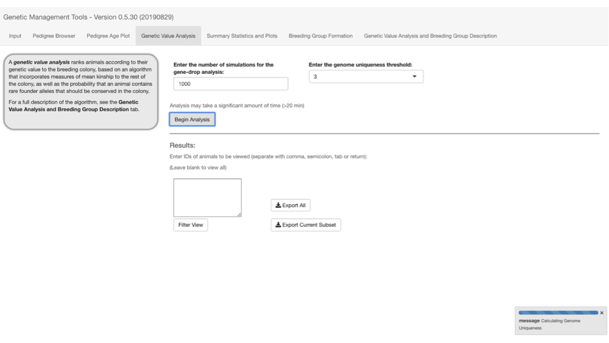
As soon as the calculations are completed, a table showing the results of the analysis is displayed in 10 record increments. The calculations for 1000 iterations of the gene dropping algorithm took 1 minute 38 seconds with the example pedigree of 3,691 animals using a MacBook Pro (Mid 2014), 2.8 GHz Intel Core i7 with 16 GB of 1600 MHz DDR3 memory.
Again you can select how many rows to display at once by changing the values in the Show entries selection tool.
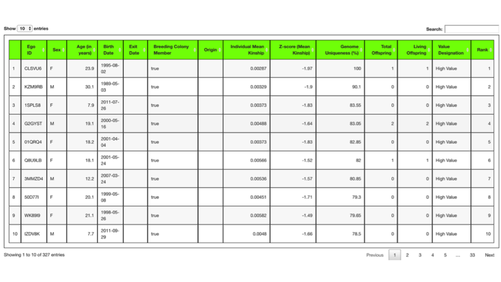
Searching down the table of results in the Value Designation column you can see starting at row 268 the values change from High Value to Low Value. Though not shown here, the value of Undetermined in the Value Designation column means the animal did not have parentage information. Infants or very young animals without assigned parents are given an “Undetermined” designation. Founders also do not have parentage information but are high value by definition.
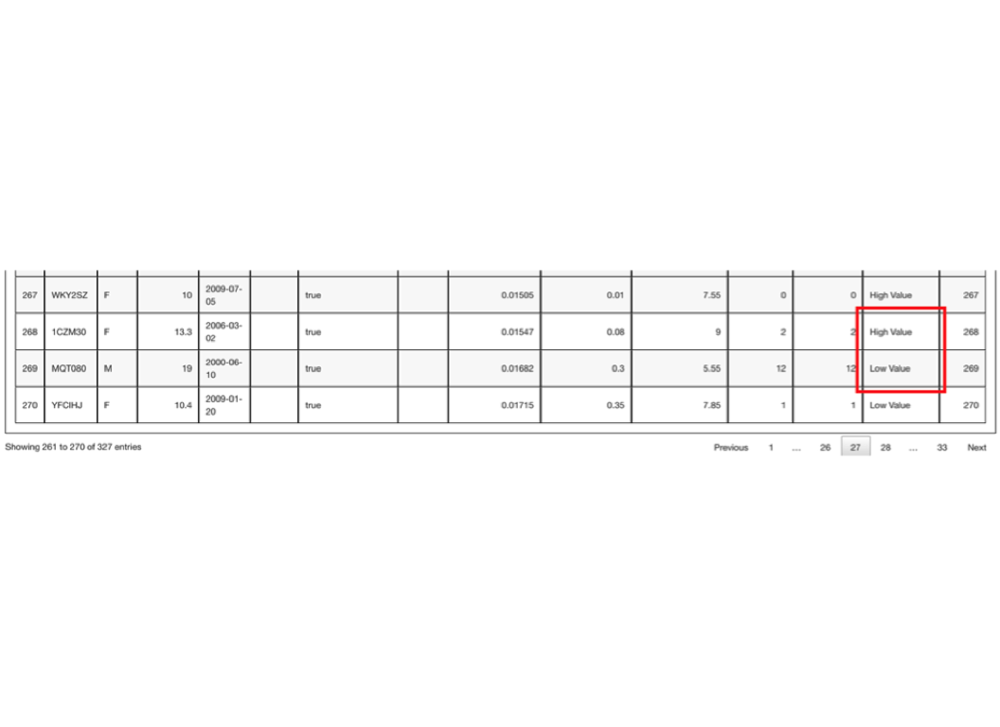
Summary Statistics
The Summary Statistics and Plots tab used results from the Genetic Value Analysis tab. Definitions of genome uniqueness and kinship are located in the Genetic Value Analysis and Breeding Group Description tab. Additionally, definitions of founder equivalents and founder genome equivalents are located at the bottom of the Summary Statistics and Plots tab.
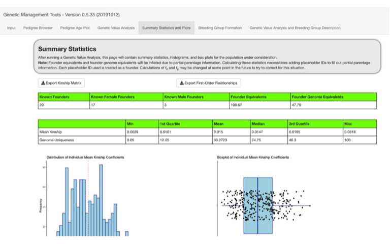
The Export Kinship Matrix button creates a CSV file that has a row and column for each individual in the genetic analysis plus a first row and first column each containing the IDs.
The first few rows of such a file are shown below.
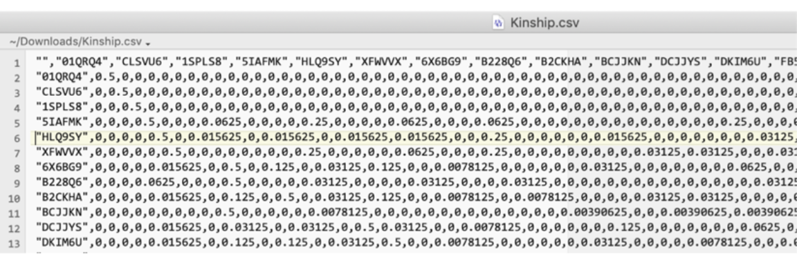
The First-Order Relationships button creates a CSV file that has the following columns defined: an unnamed column for row number, id, parents, offspring, siblings, and total. Counts are based off known relationships. The first few rows of such a file are shown below.
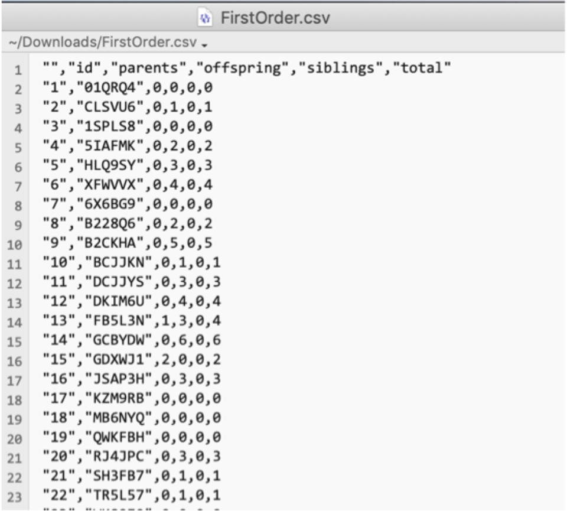
The Export Female Founders and Export Male Founders buttons creates a CSV file that has the following columns defined: an unnamed column for row number, id, sires, dam, sex, gen, birth, exit, age, recordStatus, population, and pedNum. The first few rows of such a file are shown below.
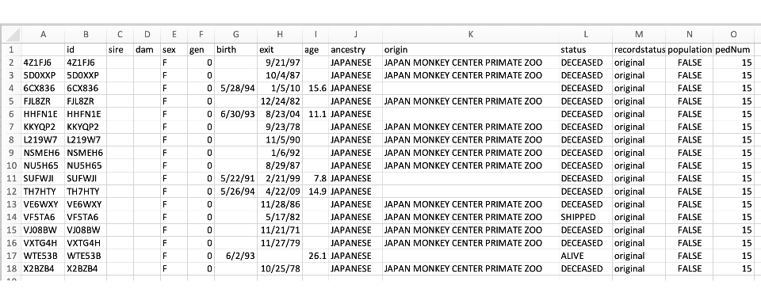
The six plots provide histograms and boxplots for the kinship coefficients, the Z-scores of the kinship coefficients, and the genome uniqueness scores.
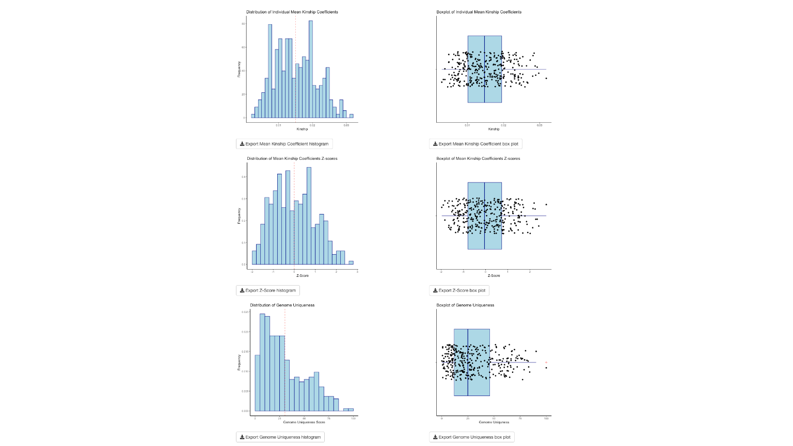
Each of the plots can be exported as a PNG file to a directory you choose.
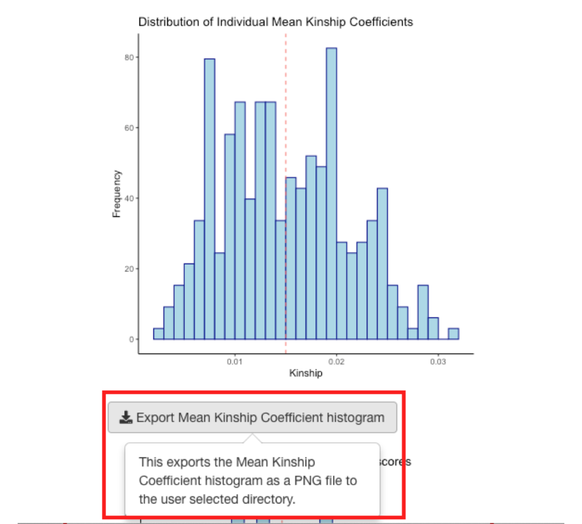
Breeding Group Formation
Selecting the Breeding Group Formation tab brings forward the screen shown below. In this screen you can form breeding groups using one of three ways based on your source of animals selected under Choose one group formation workflow:.
Additionally, you must specify how you want to construct the breeding groups with regard to the groups’ sex ratios. The third of the three options (User specified sex ratio of breeders) causes the appearance of the field where you can fill in the sex ratio (F/M) that you want to have in the formed breeding groups. The sex ratio algorithm will form a group as nearly to the selected ratio as possible given the size of the group. Limits in the availability of either sex will restrict the size of the groups formed.
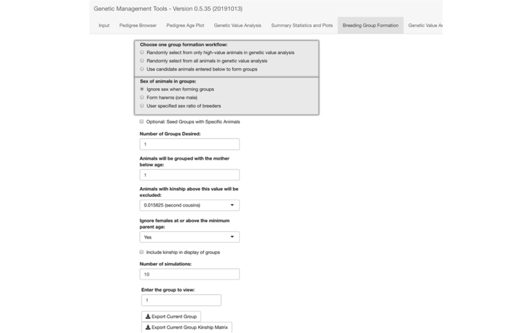
The Make Groups button appears once you select the source of animals you are going to use. However, you probably will be making additional selections using other controls on the screen.
The most common source of animals will be the high-value animals found by the genetic analysis.
You can either type in the number of groups that you want to form or select the number of groups using the arrows on the right edge of the Number of Groups Desired field, which is outlined in blue in the image below.
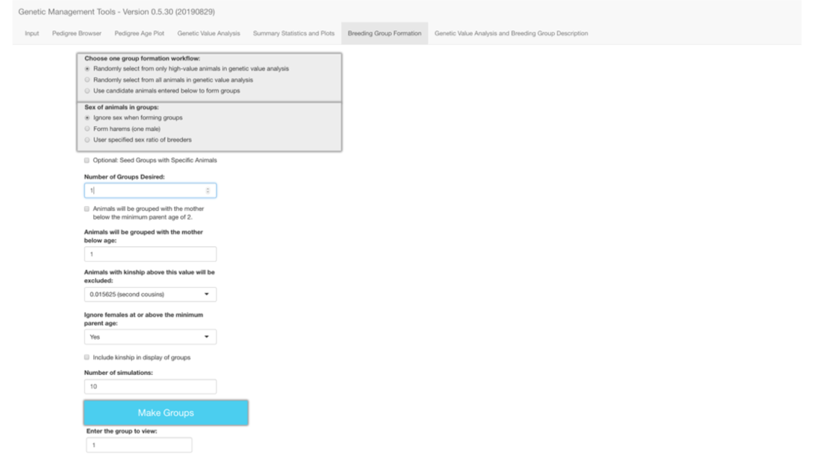
There are often behavioral constraints, such as preexisting social groups, that dictate the need to have some animals maintained together. This need is readily accommodated by pre-seeding groups with those social groups. You may select the Optional: Seed Groups with Specific Animals field if you decide to place some animals together within the groups because you know them to be compatible with each other.
This has been done in the example below using six groups with differing numbers of seed animals. Note the selection of having animals below the minimum parent age of two being grouped with their mother.
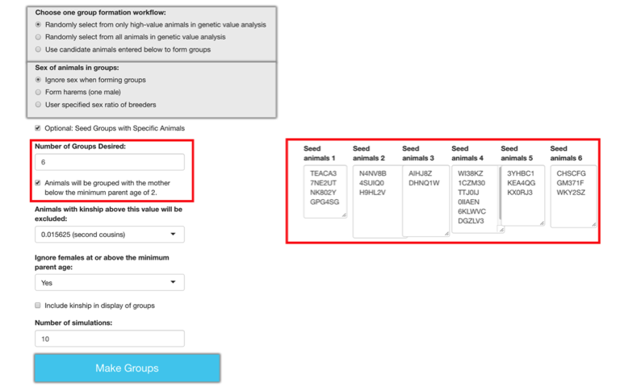
Each group has all of the seed animals that were assigned to it plus additional animals that could be added while satisfying the requirements imposed by the selected settings. I have indicated the seed animals for the first group with red rectangles.
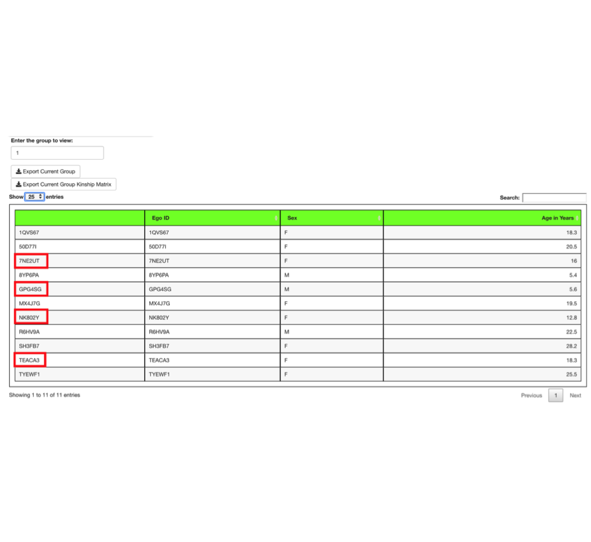
Display of kinship values requires that the Include kinship in display of groups checkbox be selected prior to group formation.
A group of ten animals was formed in the next run after choosing to include kinship and selecting the Make Groups button.
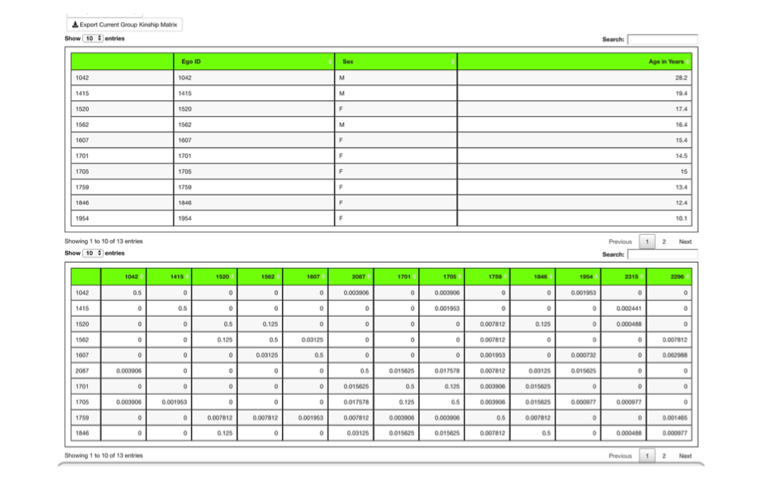
The option to select a desired sex ratio allows you to select any ratio desired. However, the ratio obtained is limited by the availability of animals that meet all criteria you have set.

Selecting a sex ratio of 2.5 with 6 groups as is illustrated resulted in 5 groups of 20 with a ratio of 14:6 (2.3) and 1 group of 23 with a ratio of 16:7 (2.3).
Groups can be individually exported into file names and locations of your choosing. The corresponding kinship matrix for each group can also be exported.